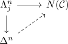
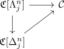
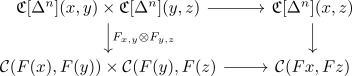
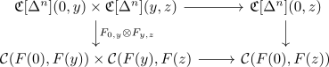

homotopy coherent nerve of a kan enriched category as quasicategory
Proposition
Let $\mathcal{C}$ be a kan enriched category, then the homotopy coherent nerve is an infinity category
Proof
using the adjunction

with

using homotopy coherent nerve of a inner horn this is a wide subcategory where only the morphism at $(0,n)$ are different.
Thus it remains to solve the liftingproblem
\begin{align*}
\mathfrak{C}[\Lambda_j^n](0,n) \arrow[]{d}{} \arrow[]{r}{}& \mathcal{C}(f(0), f(n))
\mathfrak{C}[\Delta^n](0,n) \arrow[]{ru}{}&
\end{align*}
as the map
\begin{align*}
\iota: \mathfrak{C}[\Lambda_j^n](0,n) \rightarrow \mathfrak{C}[\Delta^n](0,n)
\end{align*}
is inner anodyne, there exisst a lift.
Thus it remains to show, that the lift can be done respecting the functorality:

Therefore it suffices to consider $x = 0, y \in \{0,n\}$ and $z = n$
